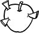

Mahalle evlerinin tekdüze bahçelerinde sıkıntıdan kıpkırmızı kesilmiş elmaların üzerine, okunmuş gül dikenleri saplardı anneannem. Bana gelince, işin "okunma" kısmından ziyade, "yazma" kısmıyla alakadar olmaya başlamıştım o günlerde. Altı yaşındaydım. Güzel günlüklerim vardı ve bir de asla günlüklerim kadar güzel olmayan günlerim. Günlükler, aynakeş birinci tekil şahısların vakanüvisleriydi. Bir günlük, kişinin kendisini hayatın merkezinde zannetmesini sağlıyor; ballandıra ballandıra, sündüre sündüre BEN diyebilmeyi mümkün kılıyordu. Oysa kendime değil, tamamen başkalarına dairdi o dönemlerde tüm karaladıklarım. Kendinden alabildiğine emin bir halde, hele hele tannazane bir biçimde BEN diyebilmek, yalnızlığı kendi seçimleri gibi algılayanlara mahsus bir ayrıcalıktır. Bense, o hodbin perdeden gürleyemeyecek kadar seçeneksizdim muhtemelen ve bir o kadar korkularla kuşatılmış. Önümde başka türlü bir seçeneğim olsaydı o vakitler, sanmam ki seçerdim yalnızlığı. Bu yüzden işte, mahremiyete itina göstermeyen kalabalıkların boğuculuğundan kaçarak, kendine ait bir odaya çekilmek biçiminde tezahür etmedi bende yazma isteği. Tam tersine, üstüme üstüme sırlanmış/kapanmış kapılarda, firarperest aralıklar açabilme arzusuyla başladım yazmaya. Böylelikle, günlerimin nasıl geçtiğini değil, aynı zaman diliminde, bir öte yerde, ismini işitmediğim, cismine tanıklık etmediğim insanlar arasında günlerin nasıl geçtiğini hayal ediyorsam onu yazıyordum günlüklerime. Hayali/hakiki "diğerleri"ni sergiledikçe, kendimdeki uyumsuzluğu saklayabildiğimi sanıyordum; belki Tanrı'nın, belki insanların gözünden, belki de salt kendiminkinden...
Çocukluğumun sırlarından biri anneannemin büyücü olduğuna dair inancımdı. O büyücüydü, ben de büyüperest. Siğillerinden kurtulmaya ahdetmiş envai çeşit insan gelirdi gündüzleri. Anneannemin karşısına geçip uzatırlardı ellerini. O zaman ben girerdim devreye. Tek tek tüm siğillerin etrafına keçeli kalemle birer halka çizmem icap ederdi. Görevimi tamamladığımda ufacık daireler dönerdi gelen "hasta"ların ellerinde. Böyle daha güzel olduklarını düşünür, fikrimi kendime saklardım. Bir zaman sonra siğiller geçer, çizdiğim çemberler kalırdı geride. Vaktiyle neyin etrafında döndüklerini unutmuş, içleri boş halkacıklar. Ardından, onlar da kaybolurdu birer ikişer. Hiçbir şey sabit değildi. Elmalar çürür, siğiller iyileşir, çemberler silinir, günlükler dolar, her şey sürekli parçalanır, parçalar yeniden birleşmek için kıvranırdı durmadan. Ben yazmaya çocukluğumun tam olarak hangi dönemecinde başladım kestiremiyorum, ama böyle bir ruh halinden demir aldığımı biliyorum. Boşlukta yüzerken çarpışan parçacıklara tutunarak... onlardan biri olduğumu bildiğim ve buna tahammül edemediğim için.
Yazıyordum çünkü muhtemelen uydurduklarım çok daha yaşanılasıydı yaşadıklarımdan. Kıyısız bir denizde pusulasız yüzüyordum; yaşıtsız, arkadaşsız, kardeşsiz ve babasız. Ait değil, emanet olduğumun farkındaydım. Anneanneleri tarafından büyütülen çocuklar emanet olma duygusunu kirli bir mendil gibi taşırlar ceplerinde. Bir gün gelecek, alıp götürecektir onları ya anneleri ya babaları. Gelmezler ise şayet, emanet olarak kalmayı sürdüreceklerdir bu âlemde.
Bu da demekti ki, ben aslında hep şimdilik buradaydım. Aradan yıllar geçse de, şimdilik duygusundan kurtulmayı hiç başaramadım. Anneannemin esirgeyen kâinatı ile babaannemin intikamcı dindarlığı arasında gidip gelirken, şu dünyada birden fazla dünya ve aynı Tanrı'nın ikiden çok çehresi olduğunu keşfettim oldukça küçük yaşta. Varoluşun sarkacı, altında uzanan boşluğun iştahından korkarak gidip gelirken durmamacasına, günlükler de benimle dolaştı şehir şehir. Aslolan geçicilikti, kalıcılık değil. Ölümün duygusu ya da korkusu değil, katreleriydi serpilen o soluduğum, içime çekip dışıma verdiğim havaya. Ben bu yüzden hiçbir zaman hayattan öteleyemedim ölümü: ne hayattan ne de yazdıklarımdan... Tuhaf olan, ana ve geçicilik fikrine böylesine bağlıyken bir edebi tür olarak zamana ve kalıcılık idealine en yakın sularda salınan romanı seçmemdi. Bunun cevabını bilmiyorum.
On bir yaşına geldiğimde, bu sefer çok daha büyük salınımla bir kez daha savruldu sarkaç. Annemle beraber yurtdışına çıktım. Artık Madrid'de, geçmişleri geçmişime zerre benzemeyen ehl-i sırça burjuva çocukların okuduğu bir İngiliz kolejindeydim. Sadece huzursuz değildim artık, uyumsuzdum bir de. Dışladıkça dışlandım. Dışa kapılarımı kapadım. Yazmak gene bir firarperestlikti özünde, ama artık dışarıya değil, içeriye kaçıyordum. Kendime... ne var ki artık bu aşamada kendim bildiğim varlık öylesine parçalıydı ki, kendimi anlattığımı sanırken başkalarını anlatıyordum. Günlük tutmayı bırakıp öykü yazmaya geçişim bu döneme rastlar. Bir de şiirler... Ne var ki artık Türkçe yazmıyordum. Farklı farklı dillerin kendilerine has armonileri vardı, bir de renkleri. Kelimeleri birincil anlamlarıyla değil, sesleri ve renkleriyle algılıyordum. Sokaklarda İspanyolca, derslerde İngilizce konuşuyor; Fransızca ve Latinceden sınavlara giriyor ve uzaktan, eski bir tanıdığa buruk bir özlemle el sallar gibi bakıyordum gündelik yaşamımdan hızla çıkıp giden anadilime. Yıllar yıllar sonra okurlar, eleştirmenler Türkçemin farklılığına dikkat çekip yetkinliğini övdüklerinde buruk bir kıvanç duyuyorum içimde. Belki de anadilim ile ben, yekdiğerine en çok ihtiyaç duyduğumuz kavşakta ayrı kalmamızın kefaretini ödetmek ve ödeyebilmek için, şimdi böyle sıkı kenetleniyoruz birbirimize.
Hayatımda süreklilik kazanan tek şey yazıydı artık. Mekânlar, kültürler, insanlar, ömürler peyderpey değiştikçe ve değişse de, yazı benimleydi. Yazdıklarımı kendime saklıyordum, başkalarıyla paylaşmak istemediğimden değil, paylaşacak pek kimse olmadığından. Ancak katışıksız bir yalnızlıktan geçenler ister yazdıklarını paylaşmayı. Günlükler defterlere, defterler dosyalara, dosyalar kitaplara dönüştü zamanla. Türkiye'ye döndükten sonra öyküler yerlerini romanlara bıraktı peyderpey. Çocukluğumdan beri sevdim yazmayı; kendimden bir parça bildim. Yazdım çünkü yalnız ve kıyısızdım, buruk ve huzursuz. Yazarlık bana bunların aksini vaat ediyor olabilir, ama vaatleri gerçekleşmese de gene yazardım, gene yazarım... Yazarlığa gelince, onun fikri de sevdası da çok çok arkadan geldi; hem geriden hem kendiliğinden...
Siğillerin etrafına halkalar çizilirdi ya keçeli kalemlerle, bir şeyi ortadan kaldırmanın yolunun, etrafını kuşatmaktan geçtiğini böyle öğrendim. O gün bugündür bir Yezidi kadar ürkerim etrafıma çıkışsız çemberler çizilmesinden. Edebiyatı, benlik ve bellek kuşatmalarındaki gedik olduğu için sevdim. Yolların kendine döndüğü dönemeçlerde, buralardan öteye yollar açtığı için... Edebiyatçılığın kendisi başlı başına bir kuşatmaya dönüştüğünde de, benzer gedikler açmaktan yanayım yazarlık çemberinde.
Bir esriklik olarak yazı, başlangıçla müsemmadır; çocukluğun karanlıklarında salınır geceleri. Bir meslek olarak yazarlık ise sonlara ve sonuçlara müpteladır; yaşlılığın parlak ışıklarına çevirir gözlerini. Geçmişin bir türlü geçip gidemeyişiyle yoğrulduğundan olsa gerek, içine kapanıktır yazı. Geleceğinin bir an önce gelmesi için didindiğinden olsa gerek, dışadönük ve yayılmacıdır yazarlık.
Başlangıçta yazı vardı benim hayatımda. Başlangıcın kayıplarını azaltabilmemi de, peşim sıra sürükleyişimi de yazıya borçluyum. Yazarlık idealinden ziyade yazının biteviliğine tutkunum. Ne sonlarla avunmak, ne başlangıçları unutmak. "Önü yoktan sonu boktan" bu serencamda "niyet-i hilkat"i bulmak için içip içip ayılmıştı Neyzen Tevfik; "cinnet-i hakikat"i okumak için yazmak isterim ben de; yaza yaza silmek üzere...
İstanbul